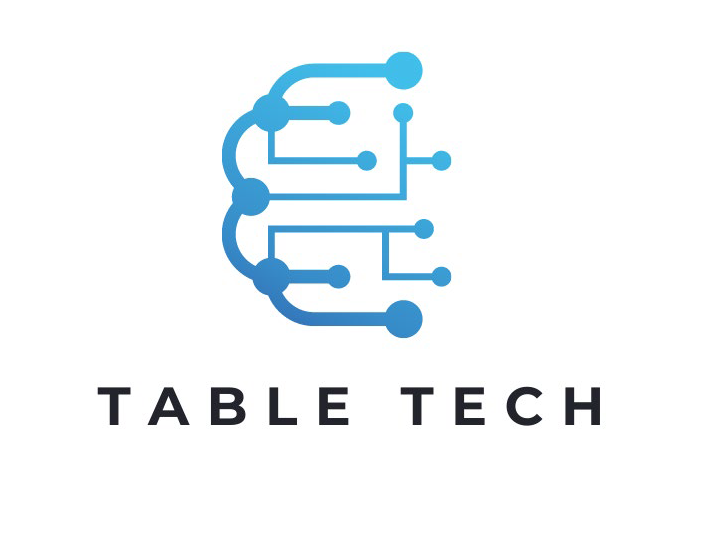

<ion-app>
  <ion-header translucent>
    <ion-toolbar>
      <ion-buttons slot="start">
        <ion-back-button defaultHref="/tabs" icon="chevron-back-outline"></ion-back-button>
      </ion-buttons>
      <ion-title>Info App</ion-title>
    </ion-toolbar>
  </ion-header>,
  <ion-content fullscreen>
    <ion-card>
      
      <ion-card-header>
        <ion-card-subtitle>App developer</ion-card-subtitle>
        <ion-card-title>Francesco Greco</ion-card-title>
      </ion-card-header>
      <ion-card-content>
        App di supporto al personale tecnico per la gestione degli interventi realizzata da ASPI Information Tecnology
      </ion-card-content>
    </ion-card>
  </ion-content>
</ion-app>
